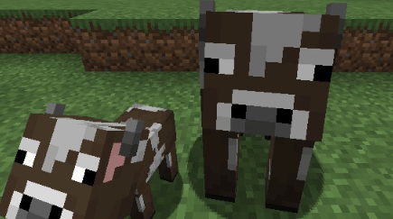

criaturas
Hostiles
Zombies
- Zombie: El tipo básico de zombie
- Zombie Pigman: Un zombie del Nether que ataca en grupo.
- Zombie ahogado: Zombies que se encuentran en el agua.
- Zombie desertico: Zombies que se encuentran en el desierto.
- Zombie aldeano: Aldeanos que fueron convertidos en zombie.
Esqueletos
- Esqueleto: Los esqueletos son enemigos que disparan flechas al jugador desde una distancia.
- Esqueleto wither: Los esqueletos del Wither son una variante del esqueleto, pero más altos, más oscuros y más peligrosos que los esqueletos normales. Tienen una espada en lugar de un Arco.
- Esqueleto glacial: Los esqueletos glaciales son una variante del esqueleto, el 80% de los esqueletos generados directamente bajo el cielo en las planicie de hielo.

Enderman
- Enderman: El Enderman es una criatura neutral en Minecraft, alta y delgada, con ojos púrpuras brillantes y partículas flotantes. Ataca si lo miras directamente a los ojos o lo golpeas, y se teletransporta para esquivar ataques o perseguirte. Puede recoger y mover ciertos bloques, y es vulnerable al agua, que le causa daño. Aparece en el Overworld durante la noche y es común en El Fin (The End), donde suele estar en grandes grupos. Al derrotarlo, puede soltar perlas de Ender, usadas para teletransportarse o encontrar el portal al Fin.

creeper
- Creepers: es una criatura hostil de Minecraft conocida por su habilidad de explotar. Es verde, no emite sonidos al moverse y se acerca sigilosamente al jugador para detonar, causando daño y destruyendo bloques cercanos. Aparece durante la noche o en zonas oscuras del Overworld y no se quema con la luz del sol. Al derrotarlo, puede soltar pólvora, útil para fabricar TNT, y en raras ocasiones discos de música si un esqueleto lo mata. Su explosión es letal y temida por los jugadores, especialmente cerca de construcciones importantes.
Pasivos
CERDO
PASIVOes una criatura pasiva que aparece en el mundo del juego. Se utiliza principalmente como fuente de carne de cerdo cruda y puede ser montado con una silla de montar, permitiendo al jugador controlarlo usando una caña de pescar con zanahoria.
OVEJA
PASIVOUna oveja en Minecraft es una criatura pasiva que proporciona lana y carne de cordero cruda (o cocinada). Su lana se puede esquilar para usar en construcciones o fabricar camas, y su color puede cambiarse al teñirla con tintes.

VACA
PASIVOes una criatura pasiva que aparece en el mundo del juego. Se utiliza principalmente como fuente de carne de cerdo cruda y puede ser montado con una silla de montar, permitiendo al jugador controlarlo usando una caña de pescar con zanahoria.